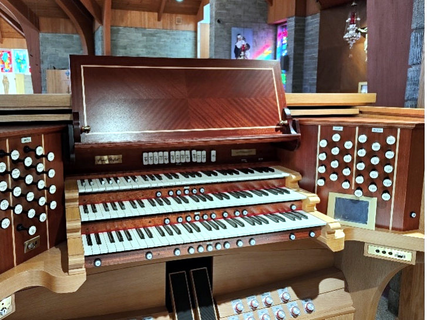
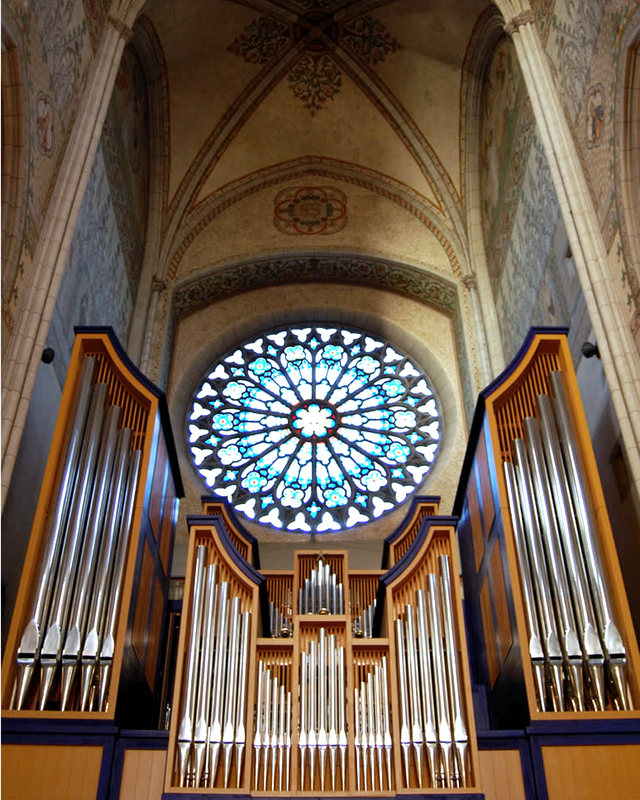
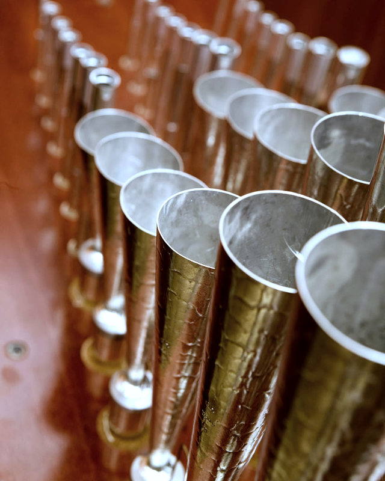
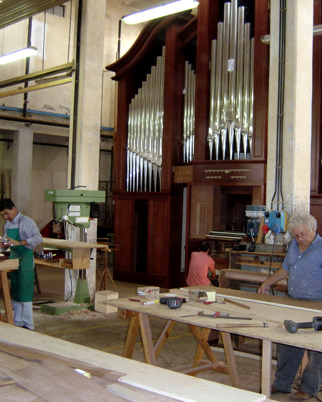
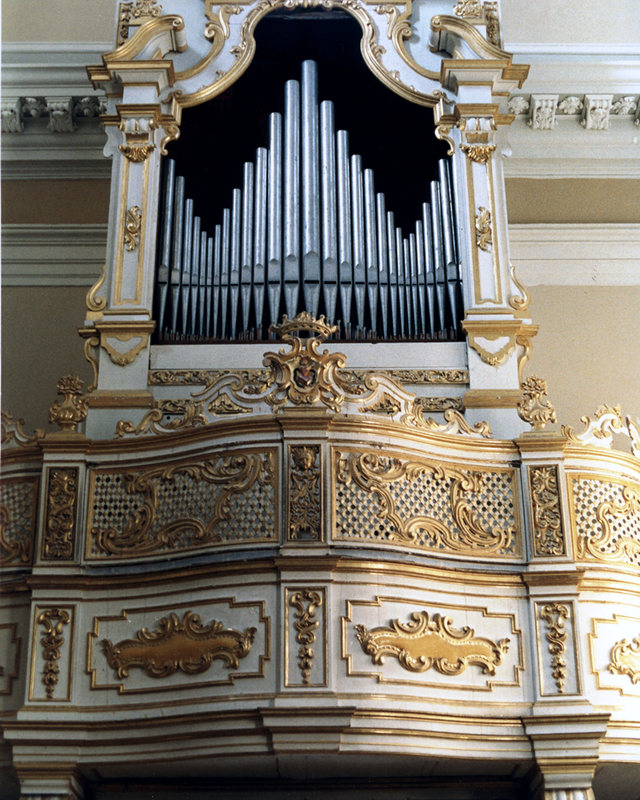
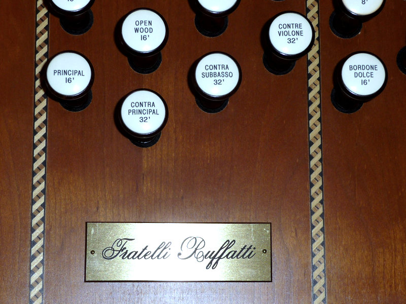
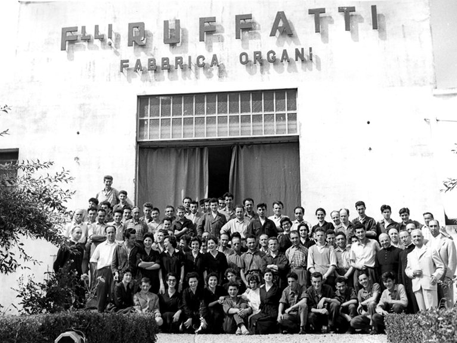

Padova, dal 1940
Costruttori e restauratori d’organi a canne
In Italia oltre 500 organi; negli Stati Uniti più di 50 strumenti di medie e grandi proporzioni, un primato in campo europeo (dati del 2016).
oppure organs@ruffatti.com, con istituzione, ruolo, luogo e una foto della chiesa: che cosa mandarci
- Organi nuoviPer chiese, cattedrali, università e sale da concerto, a trasmissione meccanica o elettrica.
- RestauroRestauro filologico di organi antichi: circa 120 nell’elenco delle opere eseguite.
Ultimi strumenti: Grand Rapids 2026, Pershore 2023, Coral Ridge 2023 →
La scritta della targhetta d’ottone sulle consolle dei nostri organi.
Realizzazioni
Ultimi strumenti, dal 2022 al 2026

- Sacred Heart, Grand Rapids, Michigan2026Organo nuovo. 3 manuali, 39 file, 2780 canne; intonazione da gennaio 2026.
- Pershore Abbey, Inghilterra2023Organo nuovo. 3 manuali, 33 registri.
- Coral Ridge Presbyterian Church, Fort Lauderdale, Florida2023Restauro. 5 manuali, 117 file.
- Notre Dame Seminary, New Orleans, Louisiana2022Organo nuovo. 2 manuali; cassa bianca e foglia d’oro a 24 carati; copertina di The Diapason, ottobre 2022. La notizia
- Santa Caterina da Siena, Wayne, Pennsylvania2022Organo nuovo. 3 manuali, 37 registri, due consolle. La notizia
86 opere significative, da una a sei tastiereGli organi restaurati
Organi nuovi
Costruiamo ogni componente possibile in laboratorio
Dai somieri alle canne ad anima e ad ancia, fino ai particolari più minuti.
-

Come costruiamo
Trasmissione meccanica o elettrica, per chiese, cattedrali, università e sale da concerto.
-

Le canne
Tutte le canne sono costruite in casa; il metallo delle noci è fuso a mano con metodi antichi.
-

Il laboratorio
Mogano sipo certificato FSC, stagionato naturalmente nel nostro laboratorio per cinque anni.
-

Il restauro
Restauro filologico di organi antichi, in Italia e all’estero.
La Fratelli Ruffatti in numeri
- 1940la Famiglia Artigiana Fratelli Ruffatti nasce a Padova
- oltre500organi in Italia
- oltre50strumenti negli Stati Uniti
- circa120restauri nell’elenco delle opere eseguite
- 6tastiere nel più grande, a Monreale
- 3generazioni della famiglia
Organi in Italia e negli Stati Uniti: dati pubblicati nel 2016. Elenco dei restauri aggiornato al 2020.
«Ogni organo è diverso, perché richiede sempre l’interazione con un luogo specifico.»
Michela Ruffatti, architetto, a Rockit, 13 maggio 2026
Ascolta. Dicono di noi
«I Principali cantano.»
Joyce Jones, concertista internazionale, già docente di musica e organista titolare, Baylor University, Waco, Texas
«I registri singoli hanno carattere e personalità, e il pleno ha fuoco e vitalità.»
Diane Bish, concertista internazionale, già direttrice della musica e organista, Coral Ridge Presbyterian Church, Fort Lauderdale, Florida
«Questo grande strumento non è ancora stato superato!»
Frederick Swann, concertista internazionale, già direttore della musica e organista, Crystal Cathedral (oggi Christ Cathedral), Garden Grove, California
Restauro di organi antichi
Restauro filologico di organi antichi, in Italia e all’estero
Restauriamo organi di ogni epoca e anche di altri costruttori, da Giovanni Guglielmi (Roma, Vallicella, 1612) a Gaetano Callido e Girolamo Zavarise: circa 120 restauri, con località, anno e autore dell’organo, nell’elenco delle opere eseguite.
«Prestiamo grande attenzione all’utilizzo degli stessi materiali usati in origine.»
Michela Ruffatti, a Rockit, 13 maggio 2026

Avete un organo Ruffatti?
Organo muto, sporco o da revisionare? La targhetta «Fratelli Ruffatti» è sulla consolle. Per la prima telefonata tenete a portata di mano:
- il nome della chiesa e il comune;
- il costruttore e l’anno dell’organo, se li conoscete;
- una foto della consolle e della targhetta;
- che cosa non funziona.

La famiglia
Tre generazioni di organari
Nel 1940 i tre fratelli Alessio, Antonio e Giuseppe Ruffatti danno vita alla «Famiglia Artigiana Fratelli Ruffatti».
Oggi la guidano Piero e Francesco, figli di Antonio e soci dal 1968. Con loro lavora dal 2004 Michela Ruffatti, architetto. Nella foto d’archivio, le maestranze davanti alla F.lli Ruffatti Fabbrica Organi.
- Maestro d’Arte e Mestiere 2020Piero e Francesco Ruffatti, categoria Strumenti musicali.
- The Diapason, ottobre 2022In copertina l’organo del Notre Dame Seminary di New Orleans.
- Homo FaberLa Fratelli Ruffatti nella guida dei mestieri d’arte.
La scheda - Legno certificato FSCMogano africano sipo per le parti interne, tagliato al quarto.
Per i giovani organisti
Il Concorso internazionale d’organo di Miami
Un evento biennale sponsorizzato dai Fratelli Ruffatti e dalla Church of Epiphany, per giovani organisti di tutto il mondo di età inferiore ai 30 anni.
- US$ 5.000primo premio; secondo US$ 2.500, terzo US$ 1.500
- 2024il decimo concorso; primo premio a Dawon Lee, Corea del Sud
- 2027la prossima edizione: bando e modulo d’iscrizione sulla pagina del concorso
Contatti
049 750 666 Dall’estero +39 049 750 666 organs@ruffatti.comChe cosa mandarci
- l’istituzione e il vostro ruolo;
- il luogo: chiesa o sala, città e Paese;
- se cercate un organo nuovo o un restauro, e quale organo c’è oggi (costruttore, anno, manuali e registri);
- la pianta o le foto della chiesa e della cantoria; per un restauro, le foto della consolle e della targhetta.
Fratelli Ruffatti, Via Facciolati 166, 35127 Padova